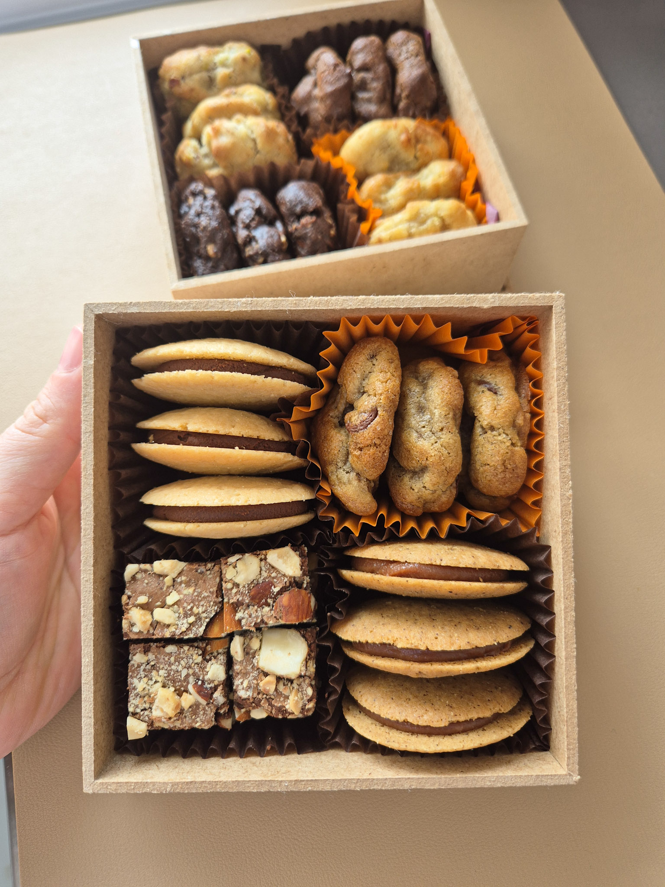
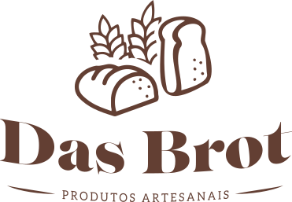
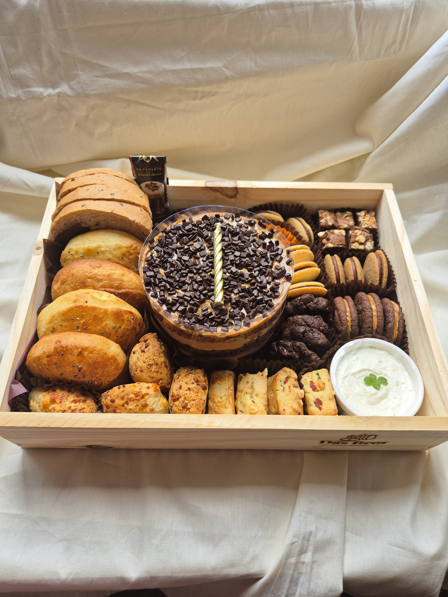
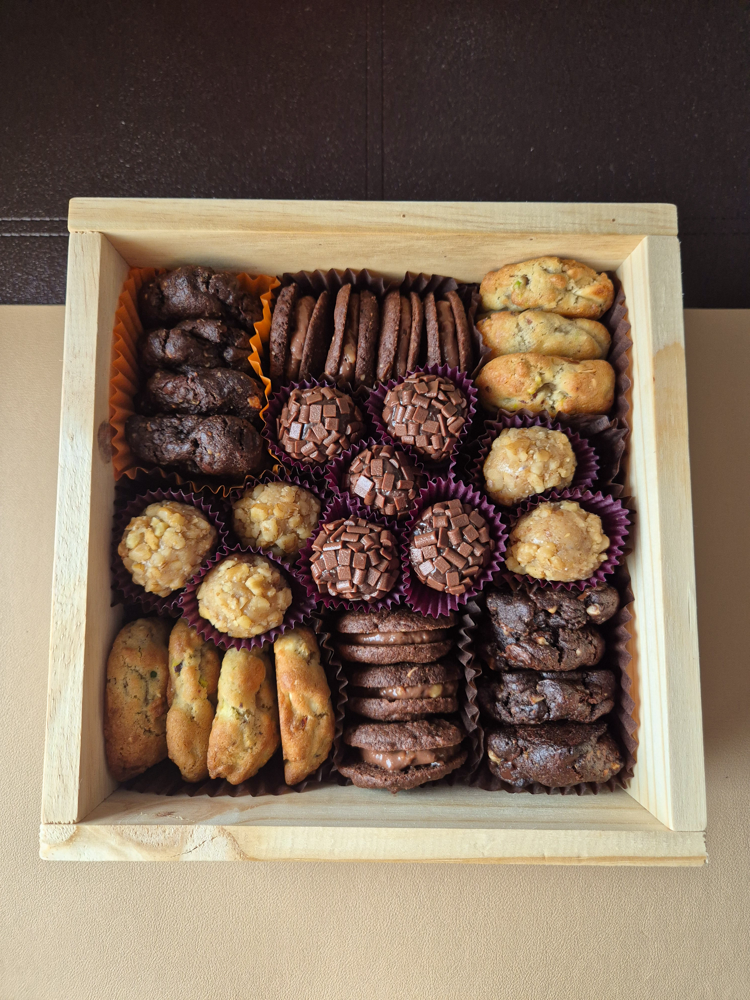
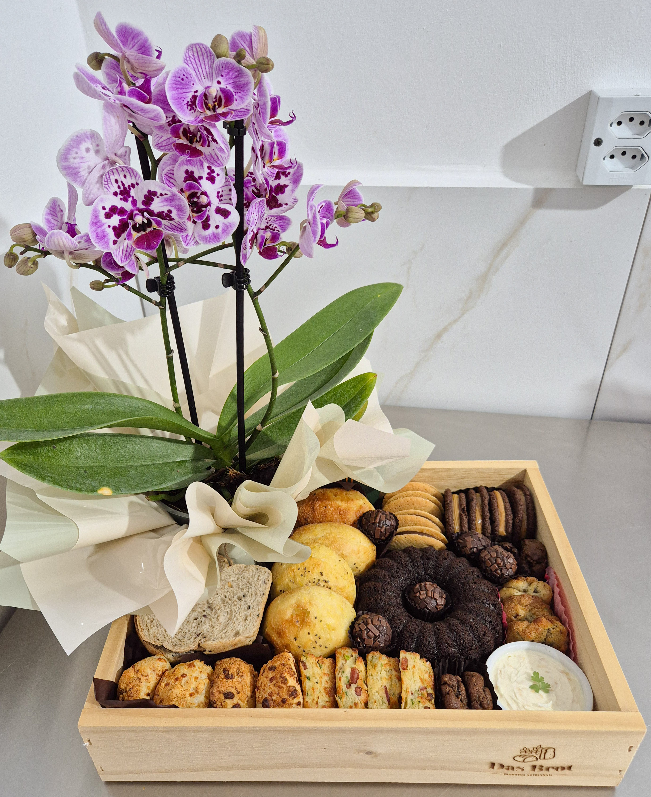
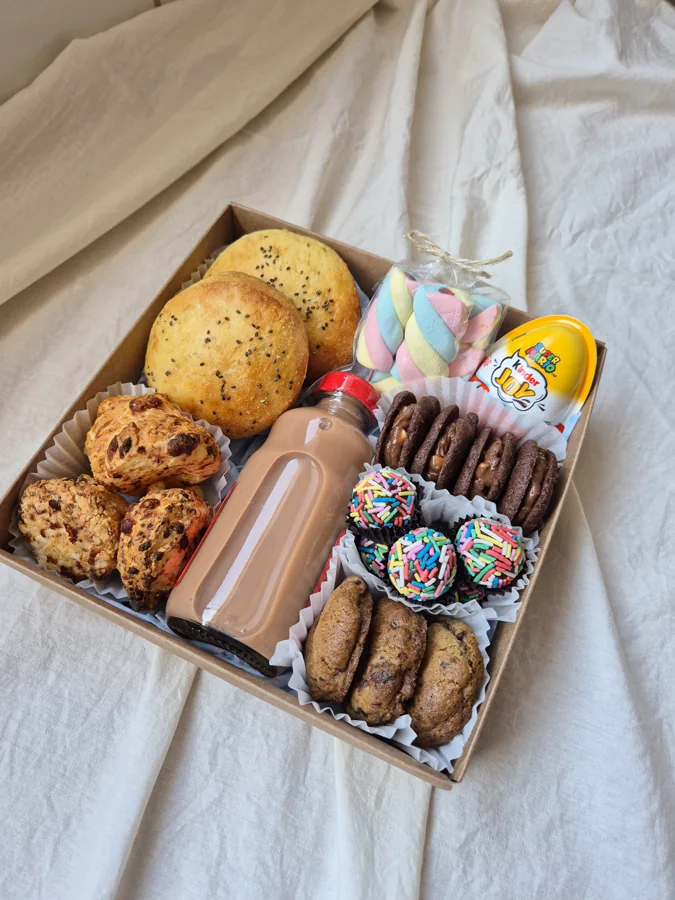
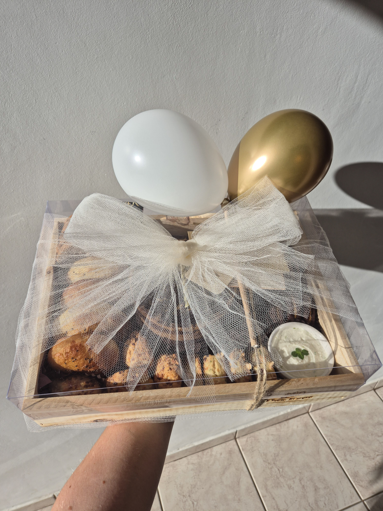

Um mimo
Um mimo que diz: lembrei de você.

Para quem você quer bem
Um café da manhã especial, uma pausa gostosa à tarde. Nossas caixas reúnem sabores artesanais para surpreender e mimar alguém que você ama.Atendimento em Caçador, SC
Conheça o catálogoEscolha uma caixa e transforme um café em um gesto inesquecível.

+500 cestas entregues!
Pequenos gestos, grandes afetos
Um mimo, um carinho ou uma celebração: escolha como surpreender quem você ama com um café da manhã ou da tarde cheio de carinho.

Um mimo que diz: lembrei de você.

Para transformar a pausa em um momento especial.

Um presente cheio de sabores e afeto.
Estas são algumas das nossas caixas. No catálogo, você encontra mais opções, composições e valores para escolher seu presente.
Ver catálogo completoCarinho em cada celebração
Além das caixas do nosso catálogo permanente, há jeitos de presentear que deixam a comemoração ainda mais especial.

Uma surpresa para a criançada
Um mimo cheio de cor e sabor para presentear os pequenos e fazer os olhinhos brilharem.
Ver no catálogo
Tem carinho e tem festa
Sabores para celebrar e balões para surpreender. Um presente para começar o novo ciclo com um sorriso.
Ver no catálogoVisite o catálogo e escolha a caixa que combina com a pessoa que você quer surpreender.
Converse com a gente pelo WhatsApp para confirmar disponibilidade, antecedência e entrega. Para entregas, consulte valores.
Um café da manhã ou da tarde com sabor de carinho. Aceitamos pix e cartão de crédito (link para pagamento).
Datas especiais, novos gestos de carinho
No Dia das Mães, no Dia dos Pais e em outras datas comemorativas, preparamos novas caixas para celebrar quem você ama. Acompanhe as novidades no nosso grupo e no Instagram.